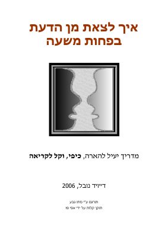
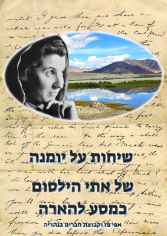

ספרים
ספרים ותרגומים בנושאי רוחניות, תודעה ויציאה מהדעת.

הספר אודות הטאבו
תרגום הספר "The Book: On the Taboo Against Knowing Who You Are" מאת אלן ואטס.
לספר (PDF)

לצאת מן הדעת
איך לצאת מדעתך בפחות משעה - על שחרור מהזדהות עם המחשבה והאגו.
לספר (PDF)

שיחות אתי הילסום
שיחות על יומנה של אתי הילסום - כמסע להארה.
לספר (PDF)הודו בשיער שיבה
רשמים והרהורים ממסעות להודו לאחר שנים רבות. מבט אחר דרך עיניים שנצברה בהן חוכמה.
לספר (DOC)